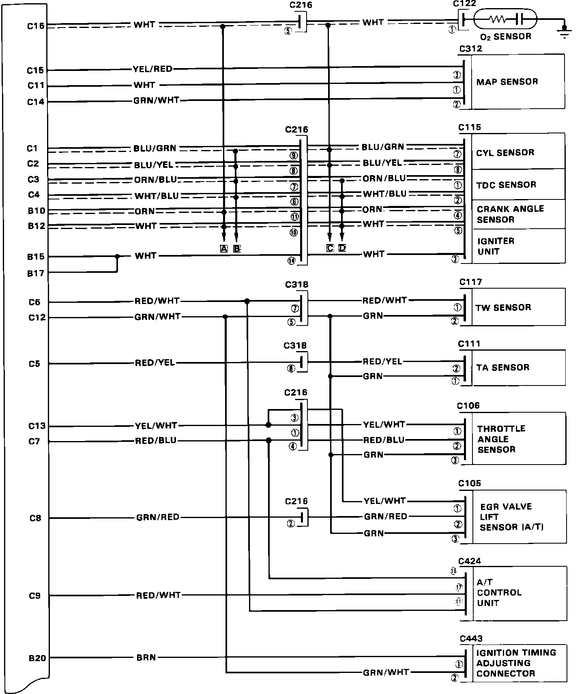
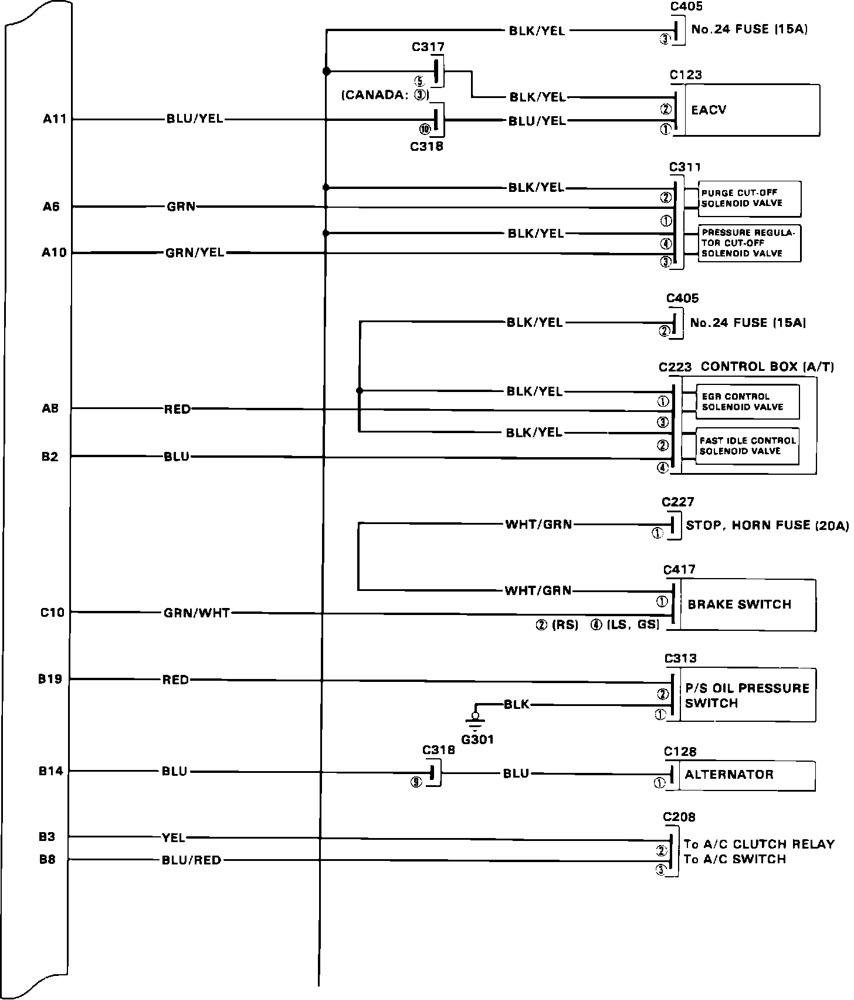
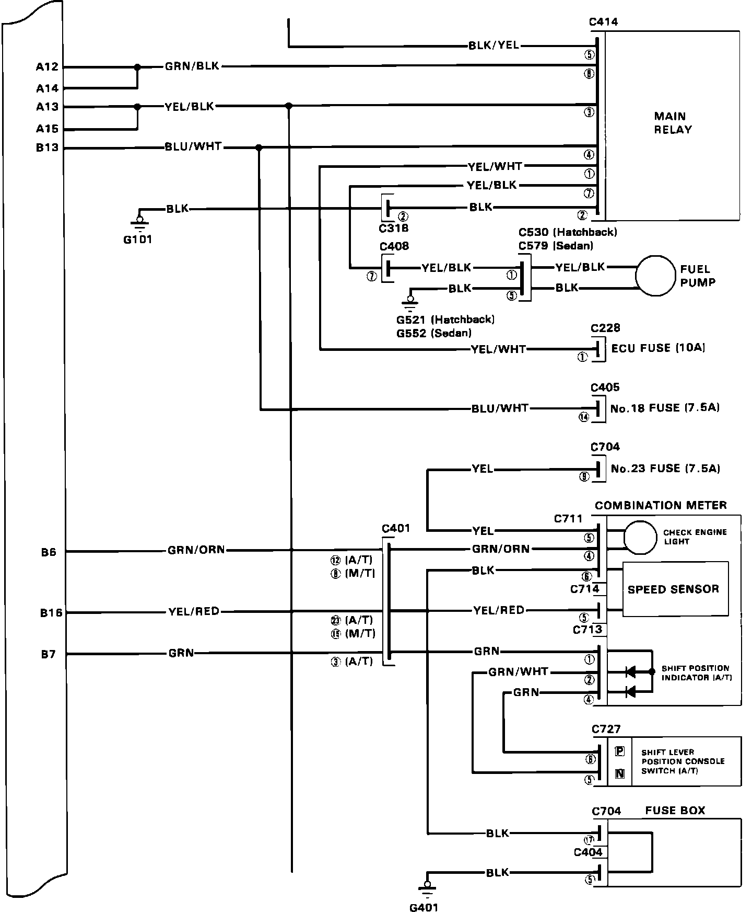
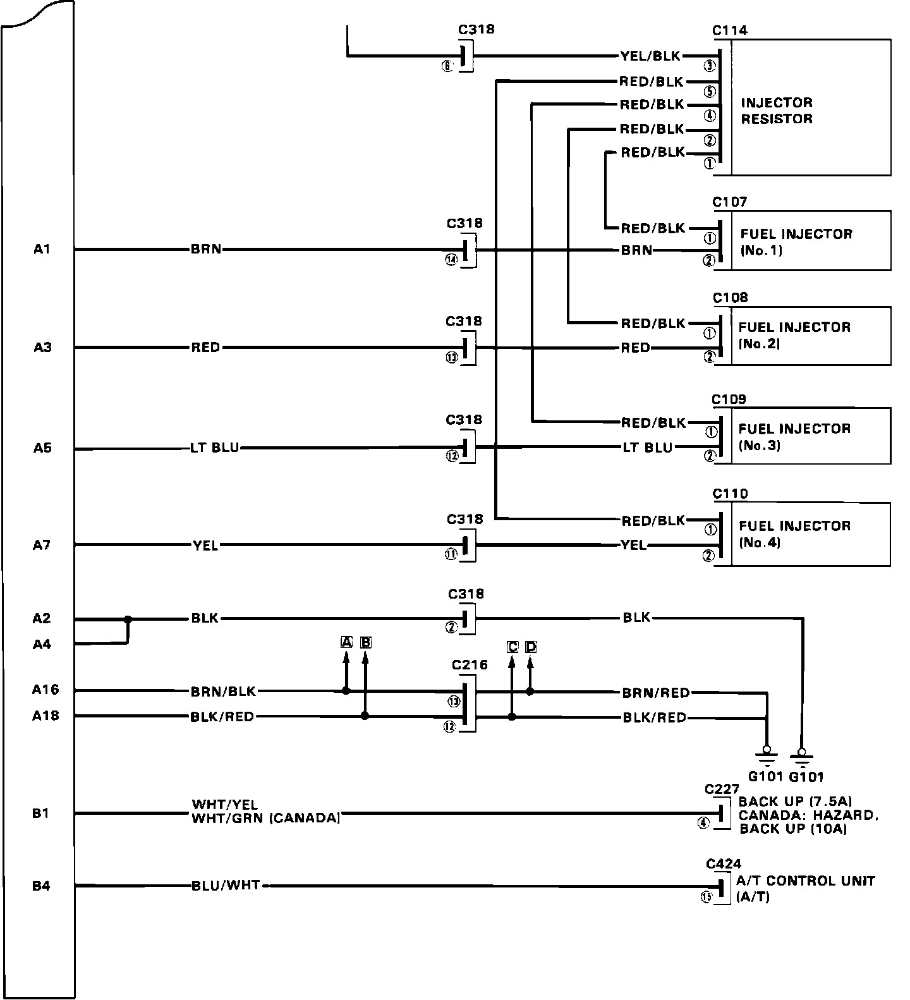

Engine Management
PGM-FI Circuit Identification 1 Of 4:

Part 1 of 4
PGM-FI Circuit Identification 2 Of 4:

Part 2 of 4
PGM-FI Circuit Identification 3 Of 4:

Part 3 of 4
PGM-FI Circuit Identification 4 Of 4:

Part 4 of 4